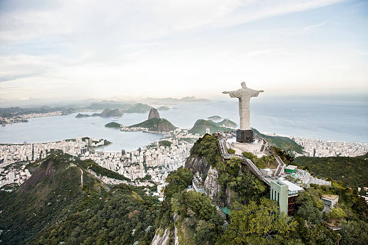
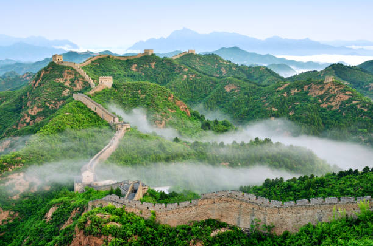
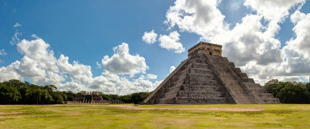
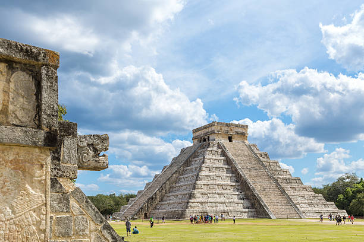
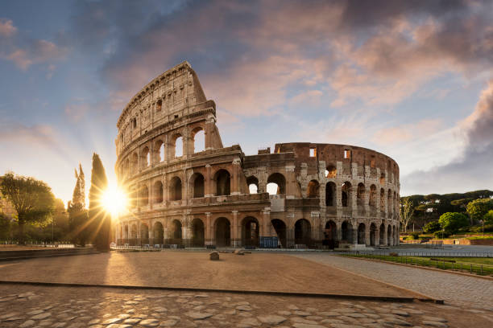
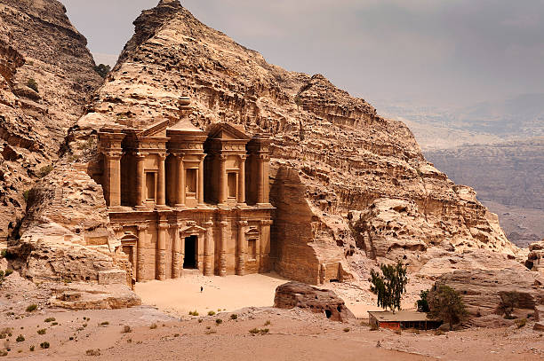
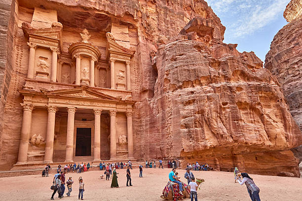
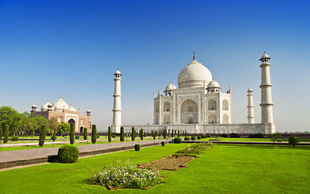
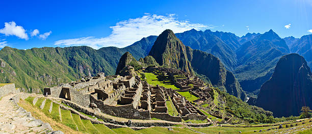
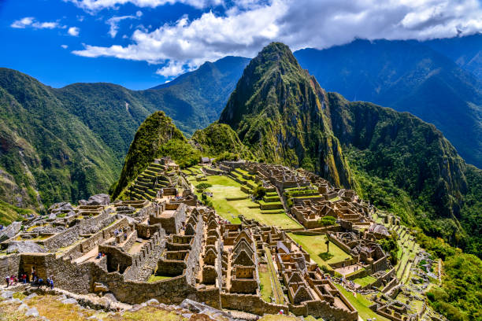

Christ The Redeemer
Brazil. ...a symbol of Christianity around the world, the statue has also become a cultural icon of both Rio de Janeiro and Brazil and was voted one of the New Seven Wonders of the World.
Christ The Redeemer is an Art Deco statue of Jesus Christ in Rio
de Janeiro, Brazil, created by French sculptor Paul Landowski and built
by Brazilian engineer Heitor da Silva Costa, in collaboration with
French engineer Albert Caquot. Romanian sculptor Gheorghe Leonida
sculpted the face.
Constructed between 1922 and 1931, the statue is 30 metres (98 ft) high, excluding its 8-metre (26 ft) pedestal. The arms stretch 28 metres (92 ft) wide. It is made of reinforced concrete and soapstone. Christ the Redeemer differs considerably from its original design, as the initial plan was a large Christ with a globe in one hand and a cross in the other. Although the project organisers originally accepted the design, it later changed to the statue of today, with the arms spread out wide. The statue weighs 635 metric tons (625 long, 700 short tons), and is located at the peak of the 700-metre (2,300 ft) Corcovado mountain in the Tijuca National Park overlooking the city of Rio de Janeiro. A symbol of Christianity around the world, the statue has also become a cultural icon of both Rio de Janeiro and Brazil and was voted one of the New Seven Wonders of the World.
Constructed between 1922 and 1931, the statue is 30 metres (98 ft) high, excluding its 8-metre (26 ft) pedestal. The arms stretch 28 metres (92 ft) wide. It is made of reinforced concrete and soapstone. Christ the Redeemer differs considerably from its original design, as the initial plan was a large Christ with a globe in one hand and a cross in the other. Although the project organisers originally accepted the design, it later changed to the statue of today, with the arms spread out wide. The statue weighs 635 metric tons (625 long, 700 short tons), and is located at the peak of the 700-metre (2,300 ft) Corcovado mountain in the Tijuca National Park overlooking the city of Rio de Janeiro. A symbol of Christianity around the world, the statue has also become a cultural icon of both Rio de Janeiro and Brazil and was voted one of the New Seven Wonders of the World.

Vincentian priest Pedro Maria Boss first suggested placing a Christian
monument on Mount Corcovado in the mid-1850s to honor Princess Isabel,
regent of Brazil and the daughter of Emperor Pedro II, but the project was
not approved.The Catholic Circle of Rio made a second proposal for a
landmark statue on the mountain in 1920. The group organized an event called Semana do Monumento ("Monument
Week") to attract donations and collect signatures to support the building
of the statue. The donations came mostly from Brazilian Catholics. The
designs considered for the "Statue of the Christ" included
a representation of the Christian cross, a statue of Jesus with a
globe in his hands, and a pedestal symbolizing the world.
The statue of Christ the Redeemer with open arms, a symbol of peace, was
chosen.
Read More
Local engineer Heitor da Silva Costa and artist Carlos Oswald designed the statue. French sculptor Paul Landowski created the work. In 1922, Landowski commissioned fellow Parisian Romanian sculptor Gheorghe Leonida, who studied sculpture at the Fine Arts Conservatory in Bucharest and in Italy. A group of engineers and technicians studied Landowski's submissions and felt building the structure of reinforced concrete (designed by Albert Caquot) instead of steel was more suitable for the cross-shaped statue. The concrete making up the base was supplied from Limhamn, Sweden. The outer layers are soapstone, chosen for its enduring qualities and ease of use. Construction took nine years, from 1922 to 1931, and cost the equivalent of US$250,000 (equivalent to $3,800,000 in 2021) and the monument opened on October 12, 1931. During the opening ceremony, the statue was to be lit by a battery of floodlights turned on remotely by Italian shortwave radio inventor Guglielmo Marconi, stationed 9,200 kilometres (5,700 mi) away in Rome but because of bad weather, the lights were activated on site.[8] In October 2006, on the 75th anniversary of the statue's completion, Cardinal Eusebio Oscar Scheid, Archbishop of Rio, consecrated a chapel, named after Brazil's patron saint—Our Lady of the Apparition—under the statue, allowing Catholics to hold baptisms and weddings there.
Lightning struck the statue during a violent thunderstorm on February 10, 2008, causing some damage to the fingers, head and eyebrows. The Rio de Janeiro state government initiated a restoration effort to replace some of the outer soapstone layers and repair the lightning rods on the statue.
Lightning damaged it again on January 17, 2014, dislodging a finger on the right hand. In 2010, a massive restoration of the statue began. Work included cleaning, replacing the mortar and soapstone on the exterior, restoring iron in the internal structure, and waterproofing the monument.
Local engineer Heitor da Silva Costa and artist Carlos Oswald designed the statue. French sculptor Paul Landowski created the work. In 1922, Landowski commissioned fellow Parisian Romanian sculptor Gheorghe Leonida, who studied sculpture at the Fine Arts Conservatory in Bucharest and in Italy. A group of engineers and technicians studied Landowski's submissions and felt building the structure of reinforced concrete (designed by Albert Caquot) instead of steel was more suitable for the cross-shaped statue. The concrete making up the base was supplied from Limhamn, Sweden. The outer layers are soapstone, chosen for its enduring qualities and ease of use. Construction took nine years, from 1922 to 1931, and cost the equivalent of US$250,000 (equivalent to $3,800,000 in 2021) and the monument opened on October 12, 1931. During the opening ceremony, the statue was to be lit by a battery of floodlights turned on remotely by Italian shortwave radio inventor Guglielmo Marconi, stationed 9,200 kilometres (5,700 mi) away in Rome but because of bad weather, the lights were activated on site.[8] In October 2006, on the 75th anniversary of the statue's completion, Cardinal Eusebio Oscar Scheid, Archbishop of Rio, consecrated a chapel, named after Brazil's patron saint—Our Lady of the Apparition—under the statue, allowing Catholics to hold baptisms and weddings there.
Lightning struck the statue during a violent thunderstorm on February 10, 2008, causing some damage to the fingers, head and eyebrows. The Rio de Janeiro state government initiated a restoration effort to replace some of the outer soapstone layers and repair the lightning rods on the statue.
Lightning damaged it again on January 17, 2014, dislodging a finger on the right hand. In 2010, a massive restoration of the statue began. Work included cleaning, replacing the mortar and soapstone on the exterior, restoring iron in the internal structure, and waterproofing the monument.
Great Wall Of China
China. ...the defensive system of the Great Wall is generally recognized as one of the most impressive architectural feats in history and was voted one of the New Seven Wonders of the World.

The Great Wall Of China is a series of fortifications that were
built across the historical northern borders of ancient Chinese states
and Imperial China as protection against various nomadic groups from the
Eurasian Steppe. Several walls were built from as early as the 7th
century BC, with selective stretches later joined by Qin Shi Huang
(220–206 BC), the first emperor of China. Little of the Qin wall
remains. Later on, many successive dynasties built and maintained
multiple stretches of border walls. The best-known sections of the wall
were built by the Ming dynasty (1368–1644).
Apart from defense, other purposes of the Great Wall have included border controls, allowing the imposition of duties on goods transported along the Silk Road, regulation or encouragement of trade and the control of immigration and emigration. Furthermore, the defensive characteristics of the Great Wall were enhanced by the construction of watchtowers, troop barracks, garrison stations, signaling capabilities through the means of smoke or fire, and the fact that the path of the Great Wall also served as a transportation corridor. The frontier walls built by different dynasties have multiple courses. Collectively, they stretch from Liaodong in the east to Lop Lake in the west, from the present-day Sino–Russian border in the north to Tao River (Taohe) in the south; along an arc that roughly delineates the edge of the Mongolian steppe; spanning 21,196.18 km (13,170.70 mi) in total. Today, the defensive system of the Great Wall is generally recognized as one of the most impressive architectural feats in history.
Apart from defense, other purposes of the Great Wall have included border controls, allowing the imposition of duties on goods transported along the Silk Road, regulation or encouragement of trade and the control of immigration and emigration. Furthermore, the defensive characteristics of the Great Wall were enhanced by the construction of watchtowers, troop barracks, garrison stations, signaling capabilities through the means of smoke or fire, and the fact that the path of the Great Wall also served as a transportation corridor. The frontier walls built by different dynasties have multiple courses. Collectively, they stretch from Liaodong in the east to Lop Lake in the west, from the present-day Sino–Russian border in the north to Tao River (Taohe) in the south; along an arc that roughly delineates the edge of the Mongolian steppe; spanning 21,196.18 km (13,170.70 mi) in total. Today, the defensive system of the Great Wall is generally recognized as one of the most impressive architectural feats in history.

The earliest sections of the wall were constructed during the Warring
States period (475-221 BCE) to defend against attacks by nomadic tribes
from the north. These walls were primarily made of earth and timber and
were not continuous structures. The construction of the Great Wall began
in earnest during the Qin dynasty (221-206 BCE), when the first emperor of
China, Qin Shi Huang, ordered the walls to be connected and fortified. The
walls were extended and rebuilt during the Han dynasty (206 BCE - 220 CE)
to protect the Silk Road trade routes from the north.
Read More
During the Northern and Southern dynasties period (420-589 CE), the walls fell into disrepair, and the nomadic tribes were able to penetrate further into Chinese territory. However, the Sui dynasty (581-618 CE) began rebuilding and extending the walls again in order to protect their empire from northern invaders. The walls were primarily made of tamped earth during this period, which proved to be a relatively inexpensive and effective building material.
The Tang dynasty (618-907 CE) continued to maintain and rebuild the walls, particularly in the western regions where they were most vulnerable to attack. The Tang dynasty also expanded Chinese influence into Central Asia, which reduced the need for extensive wall building in those areas.
During the Song dynasty (960-1279 CE), the walls were again neglected as the dynasty focused on internal development rather than external defense. However, the Song dynasty faced increasing pressure from the northern Liao dynasty and the Jin dynasty, which eventually led to the fall of the Northern Song dynasty in 1127 CE.
The Mongols, led by Genghis Khan, breached the wall in the 13th century and went on to conquer China. The Mongol Empire was followed by the Yuan dynasty (1271-1368 CE), which was also of Mongol origin. During the Yuan dynasty, the wall was not a major focus of defense, and many sections fell into disrepair.
The Ming dynasty (1368-1644 CE) took power after overthrowing the Mongols, and the Ming emperors launched a massive building campaign to repair and extend the Great Wall. The Ming dynasty built many of the most well-known sections of the wall, including the sections near Beijing and along the northern border of China. The walls were made of brick and stone, which provided greater strength and durability than earlier materials.
In addition to building the wall, the Ming dynasty also constructed watchtowers, barracks, and other fortifications to increase the wall's effectiveness. The wall was also equipped with signal beacons and other communication systems to allow for rapid communication along the length of the wall.
Despite the impressive construction of the Ming-era Great Wall, it was not always effective in protecting China from invaders. The Manchus, a nomadic people from the northeast, invaded China in the 17th century and established the Qing dynasty (1644-1912 CE). The Qing dynasty did not focus on maintaining the Great Wall, instead relying on diplomacy and military campaigns to protect China's borders.
During the 19th and 20th centuries, the Great Wall became a symbol of Chinese national identity and pride. However, many sections of the wall fell into disrepair
During the Northern and Southern dynasties period (420-589 CE), the walls fell into disrepair, and the nomadic tribes were able to penetrate further into Chinese territory. However, the Sui dynasty (581-618 CE) began rebuilding and extending the walls again in order to protect their empire from northern invaders. The walls were primarily made of tamped earth during this period, which proved to be a relatively inexpensive and effective building material.
The Tang dynasty (618-907 CE) continued to maintain and rebuild the walls, particularly in the western regions where they were most vulnerable to attack. The Tang dynasty also expanded Chinese influence into Central Asia, which reduced the need for extensive wall building in those areas.
During the Song dynasty (960-1279 CE), the walls were again neglected as the dynasty focused on internal development rather than external defense. However, the Song dynasty faced increasing pressure from the northern Liao dynasty and the Jin dynasty, which eventually led to the fall of the Northern Song dynasty in 1127 CE.
The Mongols, led by Genghis Khan, breached the wall in the 13th century and went on to conquer China. The Mongol Empire was followed by the Yuan dynasty (1271-1368 CE), which was also of Mongol origin. During the Yuan dynasty, the wall was not a major focus of defense, and many sections fell into disrepair.
The Ming dynasty (1368-1644 CE) took power after overthrowing the Mongols, and the Ming emperors launched a massive building campaign to repair and extend the Great Wall. The Ming dynasty built many of the most well-known sections of the wall, including the sections near Beijing and along the northern border of China. The walls were made of brick and stone, which provided greater strength and durability than earlier materials.
In addition to building the wall, the Ming dynasty also constructed watchtowers, barracks, and other fortifications to increase the wall's effectiveness. The wall was also equipped with signal beacons and other communication systems to allow for rapid communication along the length of the wall.
Despite the impressive construction of the Ming-era Great Wall, it was not always effective in protecting China from invaders. The Manchus, a nomadic people from the northeast, invaded China in the 17th century and established the Qing dynasty (1644-1912 CE). The Qing dynasty did not focus on maintaining the Great Wall, instead relying on diplomacy and military campaigns to protect China's borders.
During the 19th and 20th centuries, the Great Wall became a symbol of Chinese national identity and pride. However, many sections of the wall fell into disrepair
Chichén Itzá
Mexico. ...exhibits a multitude of architectural styles, reminiscent of styles seen in central Mexico and of the Puuc and Chenes styles of the Northern Maya lowlands and was voted one of the New Seven Wonders of the World.

Chichén Itzá (often spelled Chichen Itza in English and
traditional Yucatec Maya) was a large pre-Columbian city built by the
Maya people of the Terminal Classic period. The archeological site is
located in Tinúm Municipality, Yucatán State, Mexico.
Chichén Itzá was inhabited by the Maya people from around 600 CE to the 13th century CE and was an important political, economic, and cultural center of the Maya civilization. The site exhibits a multitude of architectural styles, reminiscent of styles seen in central Mexico and of the Puuc and Chenes styles of the Northern Maya lowlands. The presence of central Mexican styles was once thought to have been representative of direct migration or even conquest from central Mexico, but most contemporary interpretations view the presence of these non-Maya styles more as the result of cultural diffusion. The name "Chichén Itzá" translates to "at the mouth of the well of the Itza," referring to the nearby cenote, or natural sinkhole, that provided the city with water.
Chichén Itzá was inhabited by the Maya people from around 600 CE to the 13th century CE and was an important political, economic, and cultural center of the Maya civilization. The site exhibits a multitude of architectural styles, reminiscent of styles seen in central Mexico and of the Puuc and Chenes styles of the Northern Maya lowlands. The presence of central Mexican styles was once thought to have been representative of direct migration or even conquest from central Mexico, but most contemporary interpretations view the presence of these non-Maya styles more as the result of cultural diffusion. The name "Chichén Itzá" translates to "at the mouth of the well of the Itza," referring to the nearby cenote, or natural sinkhole, that provided the city with water.

Chichén Itzá was built in three distinct phases, each reflecting different
architectural styles and cultural influences. The first phase, known as
the Old Chichén period (600-800 CE), was characterized by the construction
of large platform mounds and the use of stone and stucco for architectural
decoration. This period was also marked by the construction of the Temple
of the Initial Series and the Temple of the Chac Mool, both of which are
still visible today.
The second phase, known as the Transitional Chichén period (800-1000 CE), saw the introduction of the Puuc architectural style, which featured intricate geometric designs and the use of limestone. During this period, the city's population grew significantly, and many new structures were built, including the Ball Court and the Caracol observatory. Read More
The third phase, known as the Late Chichén period (1000-1250 CE), was marked by the arrival of the Toltec people from central Mexico, who brought with them a new architectural style characterized by large, columned temples and detailed carvings. During this period, Chichén Itzá became a major political and economic center, with a large market and a network of roads connecting it to other Maya cities.
One of the most iconic structures at Chichén Itzá is the Temple of Kukulcan, also known as El Castillo. This pyramid-shaped temple was built during the Late Chichén period and is a testament to the city's architectural and engineering prowess. The temple is 98 feet tall and features a series of terraces, each with 91 steps, leading up to a flat platform at the top. In total, the temple has 365 steps, one for each day of the year.
Another notable structure at Chichén Itzá is the Ball Court, which is the largest and best-preserved ball court in Mesoamerica. The court is 545 feet long and 225 feet wide and features stone rings on either side of the court through which players would try to pass a rubber ball without using their hands or feet. The ball game was an important religious and political ritual in ancient Mesoamerican societies and was often used to resolve conflicts between cities.
Chichén Itzá also features a number of other impressive structures, including the Temple of the Warriors, the Tzompantli platform, and the Temple of the Jaguar. The site also contains a number of cenotes, including the Sacred Cenote, which was used for religious ceremonies and sacrifices. Chichén Itzá declined in importance and was abandoned by the Maya people in the 13th century CE, likely due to a combination of factors including overpopulation, drought, and political instability. The site was rediscovered by Spanish explorers in the 16th century CE and was extensively studied and restored in the 20th century. Today, Chichén Itzá is a popular tourist destination and a UNESCO World Heritage site.
The second phase, known as the Transitional Chichén period (800-1000 CE), saw the introduction of the Puuc architectural style, which featured intricate geometric designs and the use of limestone. During this period, the city's population grew significantly, and many new structures were built, including the Ball Court and the Caracol observatory. Read More
The third phase, known as the Late Chichén period (1000-1250 CE), was marked by the arrival of the Toltec people from central Mexico, who brought with them a new architectural style characterized by large, columned temples and detailed carvings. During this period, Chichén Itzá became a major political and economic center, with a large market and a network of roads connecting it to other Maya cities.
One of the most iconic structures at Chichén Itzá is the Temple of Kukulcan, also known as El Castillo. This pyramid-shaped temple was built during the Late Chichén period and is a testament to the city's architectural and engineering prowess. The temple is 98 feet tall and features a series of terraces, each with 91 steps, leading up to a flat platform at the top. In total, the temple has 365 steps, one for each day of the year.
Another notable structure at Chichén Itzá is the Ball Court, which is the largest and best-preserved ball court in Mesoamerica. The court is 545 feet long and 225 feet wide and features stone rings on either side of the court through which players would try to pass a rubber ball without using their hands or feet. The ball game was an important religious and political ritual in ancient Mesoamerican societies and was often used to resolve conflicts between cities.
Chichén Itzá also features a number of other impressive structures, including the Temple of the Warriors, the Tzompantli platform, and the Temple of the Jaguar. The site also contains a number of cenotes, including the Sacred Cenote, which was used for religious ceremonies and sacrifices. Chichén Itzá declined in importance and was abandoned by the Maya people in the 13th century CE, likely due to a combination of factors including overpopulation, drought, and political instability. The site was rediscovered by Spanish explorers in the 16th century CE and was extensively studied and restored in the 20th century. Today, Chichén Itzá is a popular tourist destination and a UNESCO World Heritage site.
Colosseum
Rome. ...largest ancient amphitheatre ever built, and is still the largest standing amphitheatre in the world, despite its age and was voted one of the New Seven Wonders of the World.
The Colosseum is an elliptical amphitheatre in the centre of the
city of Rome, Italy, just east of the Roman Forum. It is the largest
ancient amphitheatre ever built, and is still the largest standing
amphitheatre in the world, despite its age. Construction began under the
emperor Vespasian (r. 69–79 AD) in 72 and was completed in 80 AD under
his successor and heir, Titus (r. 79–81). Further modifications were
made during the reign of Domitian (r. 81–96). The three emperors who
were patrons of the work are known as the Flavian dynasty, and the
amphitheatre was named the Flavian Amphitheatre by later classicists and
archaeologists for its association with their family name (Flavius).
The Colosseum is built of travertine limestone, tuff (volcanic rock), and brick-faced concrete. It could hold an estimated 50,000 to 80,000 spectators at various points in its history, having an average audience of some 65,000; it was used for gladiatorial contests and public spectacles including animal hunts, executions, re-enactments of famous battles, and dramas based on Roman mythology, and briefly mock sea battles. It also features four levels of seating and an elaborate system of tunnels and trapdoors beneath the arena. The building ceased to be used for entertainment in the early medieval era. It was later reused for such purposes as housing, workshops, quarters for a religious order, a fortress, a quarry, and a Christian shrine.
The Colosseum is built of travertine limestone, tuff (volcanic rock), and brick-faced concrete. It could hold an estimated 50,000 to 80,000 spectators at various points in its history, having an average audience of some 65,000; it was used for gladiatorial contests and public spectacles including animal hunts, executions, re-enactments of famous battles, and dramas based on Roman mythology, and briefly mock sea battles. It also features four levels of seating and an elaborate system of tunnels and trapdoors beneath the arena. The building ceased to be used for entertainment in the early medieval era. It was later reused for such purposes as housing, workshops, quarters for a religious order, a fortress, a quarry, and a Christian shrine.

The Colosseum was also a symbol of the power and grandeur of the Roman
Empire. It was built on the site of Nero's Golden House, a sprawling
palace that had fallen into disuse after Nero's death. By demolishing the
palace and building the Colosseum in its place, Vespasian and Titus sought
to demonstrate their commitment to public entertainment and the welfare of
the Roman people. The Colosseum was used for a variety of public
spectacles and games, including gladiatorial contests, wild animal hunts,
mock naval battles, and public executions. These events were popular with
the Roman people and served as a way for the ruling class to demonstrate
their power and wealth. The games were often violent and brutal, with
gladiators and animals fighting to the death for the entertainment of the
spectators.
Read More
Over time, the Colosseum became a symbol of the excesses and decadence of the Roman Empire. As the empire declined and Christianity became the dominant religion, the use of the Colosseum for public spectacles and games declined as well. The building fell into disrepair and was used for other purposes, including as a quarry for building materials.
Despite its decline, the Colosseum remained an important symbol of Rome's ancient heritage. In the Middle Ages, it was used as a fortress and a church, and in the Renaissance, it was rediscovered by artists and architects who drew inspiration from its grandeur and scale. The building was extensively restored in the 18th and 19th centuries, and today, it is one of Rome's most popular tourist attractions. In addition to its historical and cultural significance, the Colosseum has also played an important role in shaping modern attitudes towards entertainment and public spectacle. It has inspired countless works of art and literature, and its legacy can be seen in everything from modern sports stadiums to the entertainment industry.
Today, the Colosseum stands as a testament to the power and ingenuity of the Roman Empire, and it continues to inspire and awe visitors from around the world.
Over time, the Colosseum became a symbol of the excesses and decadence of the Roman Empire. As the empire declined and Christianity became the dominant religion, the use of the Colosseum for public spectacles and games declined as well. The building fell into disrepair and was used for other purposes, including as a quarry for building materials.
Despite its decline, the Colosseum remained an important symbol of Rome's ancient heritage. In the Middle Ages, it was used as a fortress and a church, and in the Renaissance, it was rediscovered by artists and architects who drew inspiration from its grandeur and scale. The building was extensively restored in the 18th and 19th centuries, and today, it is one of Rome's most popular tourist attractions. In addition to its historical and cultural significance, the Colosseum has also played an important role in shaping modern attitudes towards entertainment and public spectacle. It has inspired countless works of art and literature, and its legacy can be seen in everything from modern sports stadiums to the entertainment industry.
Today, the Colosseum stands as a testament to the power and ingenuity of the Roman Empire, and it continues to inspire and awe visitors from around the world.
Petra
Jordan. ...one of the most precious cultural properties of man's cultural heritage and was voted one of the New Seven Wonders of the World.

Petra originally known to its inhabitants as Raqmu or Raqēmō, is
a historic and archaeological city in southern Jordan. It is adjacent to
the mountain of Jabal Al-Madbah, in a basin surrounded by mountains
forming the eastern flank of the Arabah valley running from the Dead Sea
to the Gulf of Aqaba. The area around Petra has been inhabited from as
early as 7000 BC, and the Nabataeans might have settled in what would
become the capital city of their kingdom as early as the 4th century BC.
Archaeological work has only discovered evidence of Nabataean presence
dating back to the second century BC, by which time Petra had become
their capital. The Nabataeans were nomadic Arabs who invested in Petra's
proximity to the incense trade routes by establishing it as a major
regional trading hub.
The city's most famous structure is the Treasury, a massive rock-cut building that was originally built as a tomb for a Nabataean king. The Treasury is adorned with intricate carvings and decorations, including images of mythological creatures and scenes from Nabataean life. It is believed to have been built in the 1st century CE, and it remains one of Petra's most popular tourist attractions. Petra's Monastery is another impressive rock-cut building that was built in the 3rd century BCE. It is believed to have been a temple or a tomb, and it features a large central hall with columns and intricate carvings. The Monastery is located high on a mountain, and visitors must climb a steep staircase to reach it.
The city's most famous structure is the Treasury, a massive rock-cut building that was originally built as a tomb for a Nabataean king. The Treasury is adorned with intricate carvings and decorations, including images of mythological creatures and scenes from Nabataean life. It is believed to have been built in the 1st century CE, and it remains one of Petra's most popular tourist attractions. Petra's Monastery is another impressive rock-cut building that was built in the 3rd century BCE. It is believed to have been a temple or a tomb, and it features a large central hall with columns and intricate carvings. The Monastery is located high on a mountain, and visitors must climb a steep staircase to reach it.

The decline of Petra began in the 3rd century CE, as the Roman Empire
expanded into the region and established new trade routes. The city was
abandoned by the 7th century, and it remained largely unknown to the
outside world until the 19th century. In 1812, a Swiss explorer named
Johann Ludwig Burckhardt rediscovered the city, and it quickly became an
important destination for archaeologists and tourists.
Read More
Today, Petra is a UNESCO World Heritage Site, and it is one of the most popular tourist destinations in the Middle East. Visitors can explore the city's ancient architecture and learn about its rich history and culture. The site is also important for its geological features, including the towering rock formations that surround the city.
Despite its popularity, Petra faces a number of challenges, including erosion, overuse, and illegal excavation. The government of Jordan has taken steps to protect the site, including limiting the number of visitors and implementing conservation measures. Nevertheless, Petra remains a powerful symbol of Jordan's ancient heritage, and it continues to inspire and awe visitors from around the world.
Today, Petra is a UNESCO World Heritage Site, and it is one of the most popular tourist destinations in the Middle East. Visitors can explore the city's ancient architecture and learn about its rich history and culture. The site is also important for its geological features, including the towering rock formations that surround the city.
Despite its popularity, Petra faces a number of challenges, including erosion, overuse, and illegal excavation. The government of Jordan has taken steps to protect the site, including limiting the number of visitors and implementing conservation measures. Nevertheless, Petra remains a powerful symbol of Jordan's ancient heritage, and it continues to inspire and awe visitors from around the world.
Taj Mahal
India. ...the jewel of Muslim art in India and one of the universally admired masterpieces of the world's heritage and was voted one of the New Seven Wonders of the World.
The Taj Mahal is an ivory-white marble mausoleum on the right
bank of the river Yamuna in Agra, Uttar Pradesh, India. It was
commissioned in 1631 by the fifth Mughal emperor, Shah Jahan (r.
1628–1658) to house the tomb of his favourite wife, Mumtaz Mahal; it
also houses the tomb of Shah Jahan himself. The tomb is the centrepiece
of a 17-hectare (42-acre) complex, which includes a mosque and a guest
house, and is set in formal gardens bounded on three sides by a
crenellated wall. Construction of the mausoleum was essentially
completed in 1643, but work continued on other phases of the project for
another 10 years. The Taj Mahal complex is believed to have been
completed in its entirety in 1653 at a cost estimated at the time to be
around ₹32 million, which in 2020 would be approximately ₹70 billion
(about US $1 billion). The construction project employed some 20,000
artisans under the guidance of a board of architects led by Ustad Ahmad
Lahauri, the emperor’s court architect. Various types of symbolism have
been employed in the Taj to reflect natural beauty and divinity.
The emperor spared no expense in building the mausoleum, using the finest materials and employing skilled craftsmen from across the Mughal Empire. The Taj Mahal is made of white marble, which was quarried from the nearby town of Makrana. The marble was then transported to Agra by a fleet of elephants. The Taj Mahal is set in a vast complex that includes a mosque and a guest house. The complex is surrounded by a large garden, which is divided into four sections by water channels. The mausoleum itself is a symmetrical structure with a central dome, which is flanked by four smaller domes. The facade of the building is adorned with intricate carvings and inlaid with precious stones.
The emperor spared no expense in building the mausoleum, using the finest materials and employing skilled craftsmen from across the Mughal Empire. The Taj Mahal is made of white marble, which was quarried from the nearby town of Makrana. The marble was then transported to Agra by a fleet of elephants. The Taj Mahal is set in a vast complex that includes a mosque and a guest house. The complex is surrounded by a large garden, which is divided into four sections by water channels. The mausoleum itself is a symmetrical structure with a central dome, which is flanked by four smaller domes. The facade of the building is adorned with intricate carvings and inlaid with precious stones.

Inside the Taj Mahal, there are two tombs - one for Mumtaz Mahal and one
for Shah Jahan. The tombs are situated in a central chamber, which is
decorated with intricate carvings and inscriptions from the Quran. The
chamber is illuminated by a series of delicate screens made of marble.
Read More
The Taj Mahal has been a popular tourist attraction for centuries, and it is considered to be one of the most beautiful buildings in the world. However, it has also faced a number of challenges over the years. The white marble exterior of the building is susceptible to damage from air pollution, and there have been concerns about the effects of tourism on the site. In response, the Indian government has implemented a number of measures to protect the Taj Mahal, including limiting the number of visitors and controlling air pollution in the area.
Despite these challenges, the Taj Mahal remains a powerful symbol of love and devotion, and it continues to inspire visitors from around the world. Its intricate design and exquisite craftsmanship are a testament to the skill and ingenuity of the Mughal Empire, and its beauty has earned it a place among the world's greatest architectural treasures.
The Taj Mahal has been a popular tourist attraction for centuries, and it is considered to be one of the most beautiful buildings in the world. However, it has also faced a number of challenges over the years. The white marble exterior of the building is susceptible to damage from air pollution, and there have been concerns about the effects of tourism on the site. In response, the Indian government has implemented a number of measures to protect the Taj Mahal, including limiting the number of visitors and controlling air pollution in the area.
Despite these challenges, the Taj Mahal remains a powerful symbol of love and devotion, and it continues to inspire visitors from around the world. Its intricate design and exquisite craftsmanship are a testament to the skill and ingenuity of the Mughal Empire, and its beauty has earned it a place among the world's greatest architectural treasures.
Machu Picchu
Peru. ...an awe-inspiring Incan citadel perched high in the Andes mountains of Peru, featuring stunning architectural design, breathtaking panoramic views, and rich cultural significance.

Machu Picchu is a 15th-century Inca citadel located in the
Eastern Cordillera of southern Peru on a 2,430-meter (7,970 ft) mountain
ridge. Often referred to as the "Lost City of the Incas", it is the most
familiar icon of the Inca Empire. It is located in the Machupicchu
District within Urubamba Province above the Sacred Valley, which is 80
kilometers (50 mi) northwest of Cusco. The Urubamba River flows past it,
cutting through the Cordillera and creating a canyon with a tropical
mountain climate. The Inca civilization had no written language and no
European visited the site until the 19th century, so far as is known, so
there are no written records of the site while it was in use. The names
of the buildings, their supposed uses, and their inhabitants are the
product of modern archaeologists on the basis of physical evidence,
including tombs at the site.

The architecture of Machu Picchu is remarkable, with buildings and
structures perfectly adapted to the mountainous terrain. The site also
features a complex system of terraces, which were used for agriculture and
allowed the Inca to grow crops in the otherwise inhospitable environment
of the Andes.
Read More
After the Spanish conquest of Peru in the 16th century, Machu Picchu was abandoned and remained largely unknown to the outside world for centuries. In 1911, Hiram Bingham stumbled upon the site while searching for the lost city of Vilcabamba, and he immediately recognized the historical significance of the ruins. Bingham's discovery sparked a renewed interest in the history and culture of the Inca, and Machu Picchu quickly became a major tourist destination.
Over the years, Machu Picchu has faced a number of challenges, including erosion, landslides, and the effects of tourism. In response, the Peruvian government has implemented a number of measures to protect the site, including limiting the number of visitors and restricting access to certain areas.
Despite these challenges, Machu Picchu remains a testament to the ingenuity and skill of the Inca civilization. Its stunning architecture, breathtaking views, and rich cultural significance have earned it a place among the world's greatest historical and archaeological treasures. The citadel is a powerful reminder of the achievements of one of the world's most advanced and complex civilizations, and it continues to inspire visitors from around the globe.
After the Spanish conquest of Peru in the 16th century, Machu Picchu was abandoned and remained largely unknown to the outside world for centuries. In 1911, Hiram Bingham stumbled upon the site while searching for the lost city of Vilcabamba, and he immediately recognized the historical significance of the ruins. Bingham's discovery sparked a renewed interest in the history and culture of the Inca, and Machu Picchu quickly became a major tourist destination.
Over the years, Machu Picchu has faced a number of challenges, including erosion, landslides, and the effects of tourism. In response, the Peruvian government has implemented a number of measures to protect the site, including limiting the number of visitors and restricting access to certain areas.
Despite these challenges, Machu Picchu remains a testament to the ingenuity and skill of the Inca civilization. Its stunning architecture, breathtaking views, and rich cultural significance have earned it a place among the world's greatest historical and archaeological treasures. The citadel is a powerful reminder of the achievements of one of the world's most advanced and complex civilizations, and it continues to inspire visitors from around the globe.